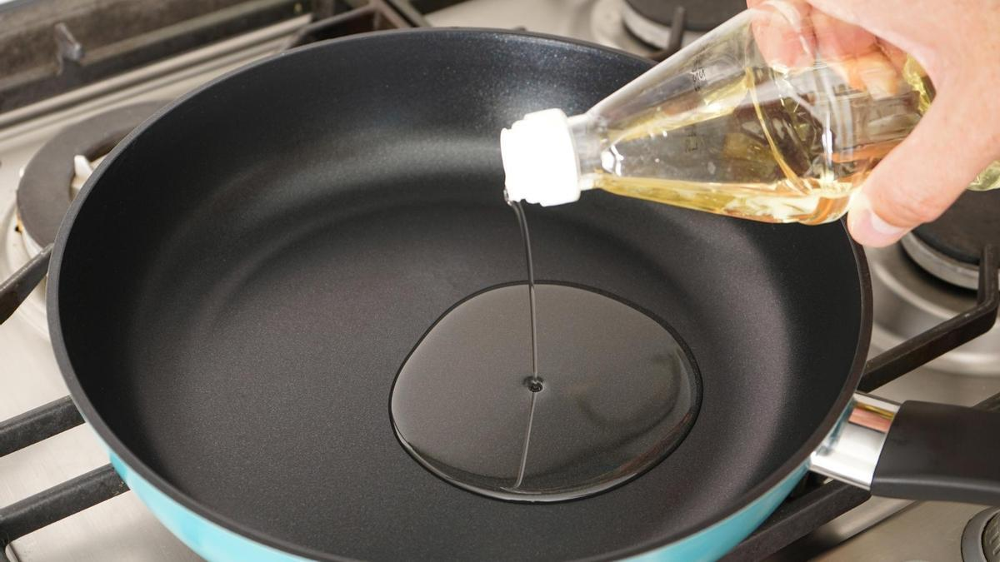

Volver al menu
Tacos con Bacalao
Ingredientes
- 500 g Bacalao
- 2 limas
- 1 diente de ajo
- Aceite de oliva virgen extra
- 12 tortillas de maíz pequeñas
- Cilantro picado
- Cebolla roja
- Sal
- Pimienta
Paso a paso
- Hacer zumo de un limón y rallar su piel. Hacer zumo de las limas y rallar la piel; reservar.
- Cortar los filetes de bacalao en trozos de bocado. Poner en un tazón grande la ralladura y el zumo de limón, la ralladura y zumo de las limas y 2 cucharadas de aceite de oliva; salpimentar.
- Añadir los trozos de corvina, remover con una cuchara y tapar el tazón con papel film.
- Poner una sartén a fuego medio con un poco de aceite de oliva. Agregar los trozos de bacalao y saltear durante unos 10 minutos. Retirar y reservar.

- Poner una sartén a fuego, bajo, sin aceite, y colocar las tortillas, de una en una, para calentarlas; retirar. Limpiar y picar el cilantro. Pelar y picar fino la cebolla morada. Repartir porciones de pescado en las tortitas de maíz y adornar con el cilantro y la cebolla picados.
Resultado Final
Volver a inicio